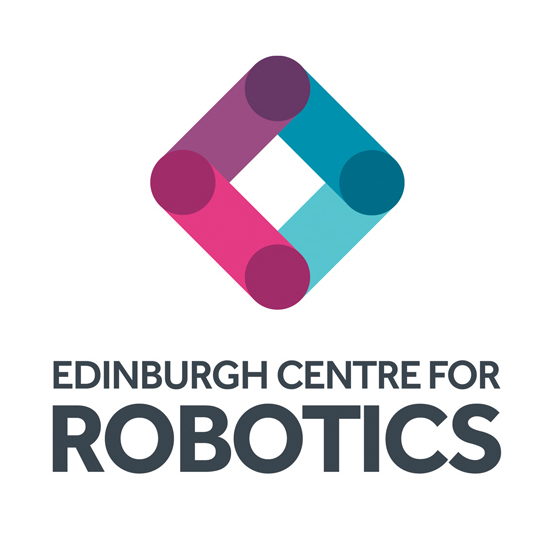
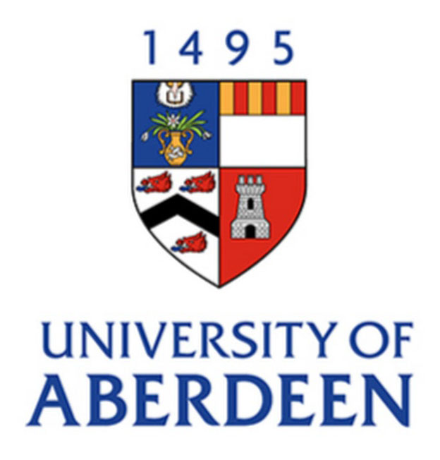
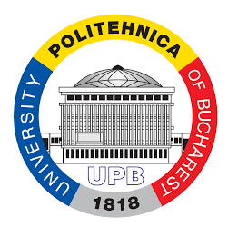
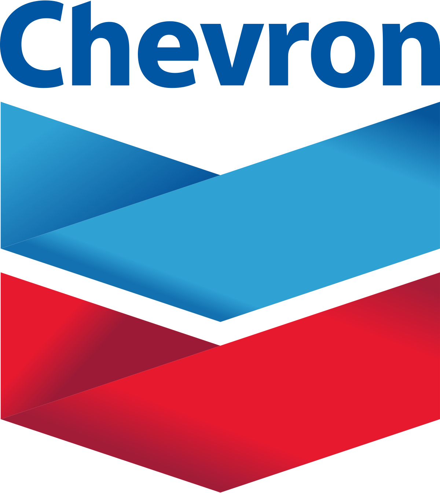

|  |
Edinburgh Centre of Robotics, Edinburgh, UK
Joint Degree between Heriot-Watt University and the University of Edinburgh
October 2018 - Expected October 2021 Ph.D. candidate in Explainable AI
Thesis title: "Explainable AI via Bayesian Learning" |
|  |
University of Aberdeen, Aberdeen, UK
September 2017 - August 2018
M.Sc. in Artificial Intelligence
Thesis title: “Well Performance Analysis – A prototype for Time-Series Forecasting”. |
|
Constanta Maritime University, Constanta, Romania
October 2014 - July 2016
M.Sc. in Marine Engineering and Navigation Thesis title: “Corossion risk of the offshore structures in the Black Sea Environment”, supervised by Zăgan Remus. |
|
|  |
University Politehnica of Bucharest, Bucharest, Romania
0ctober 2010 - July 2014
B.Sc. in Mechatronics and Robotics Thesis title: “Kinematic and dynamic study of humanoid robots”, supervised by Spânu Alina. |
|
Schlumberger Cambridge Research, UK
Summer, 2021
Research Intern Industrial supervisors: Michael John Wiliams and Herbert Lau. Devloping explainable Bayesian Networks using Natural Language explanations and visualisation techniques. |
|
|  |
Chevron, Aberdeen, UK
Summer, 2020
Data Science Intern Industrial supervisor: Sander Mos Developing a prototype for predicting the performance of the oil and gas reservoir management, by combining an LSTM model with Symbolic Aggregate Approximation modeling (SAX-LSTM). |
|
ArcelorMittal, Galati, Romania
Summer, 2020
Maintenance Planning Engineer
Coordinating resources and ensuring timely execution of plant operations. |